01
Teledetección aplicada
Procesamiento de imágenes Sentinel-1/2, Landsat y reanálisis climáticos para detectar agua, inundaciones y cambios en el territorio.
Teledetección · Machine learning · Ciencias ambientales
Somos una consultora de ciencias ambientales y machine learning. Convertimos datos satelitales en herramientas concretas para anticipar y gestionar inundaciones.
Qué hacemos
Cubrimos el ciclo completo: adquisición y procesamiento de datos, modelado predictivo y entrega de plataformas listas para operar.
01
Procesamiento de imágenes Sentinel-1/2, Landsat y reanálisis climáticos para detectar agua, inundaciones y cambios en el territorio.
02
Modelos predictivos sobre series temporales satelitales, validados contra eventos históricos documentados.
03
Sistemas de alerta temprana por subcuenca, integrados con redes hidrométricas oficiales.
04
Tableros web con mapas interactivos y reportes automatizados para equipos de emergencias y planificación.
Trabajos realizados
Casos de punta a punta: desde un sistema operativo de alerta temprana de inundaciones y datasets multi-constelación hasta diagnósticos hídricos para el agro e investigación publicada en super resolución satelital.
MVP operativo para la cuenca del Río Luján (partido de Escobar, Buenos Aires): monitoreo satelital, pronóstico hidrometeorológico, niveles oficiales del INA y alertas por subcuenca, de la investigación al tablero.

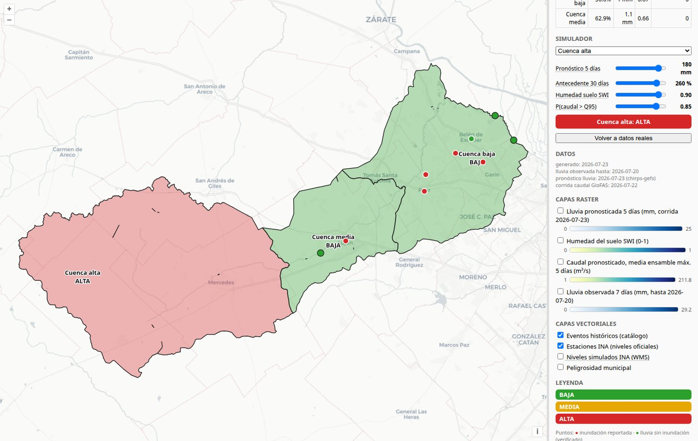
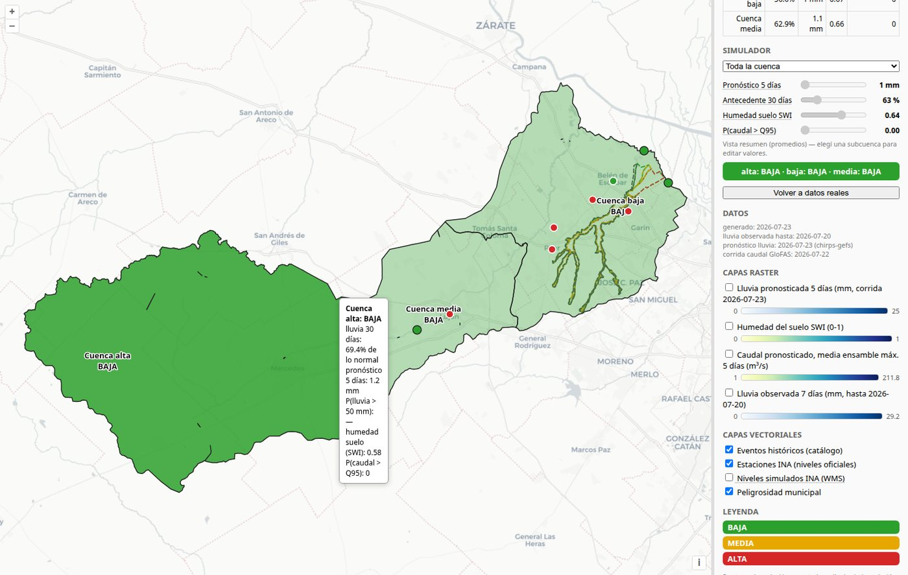
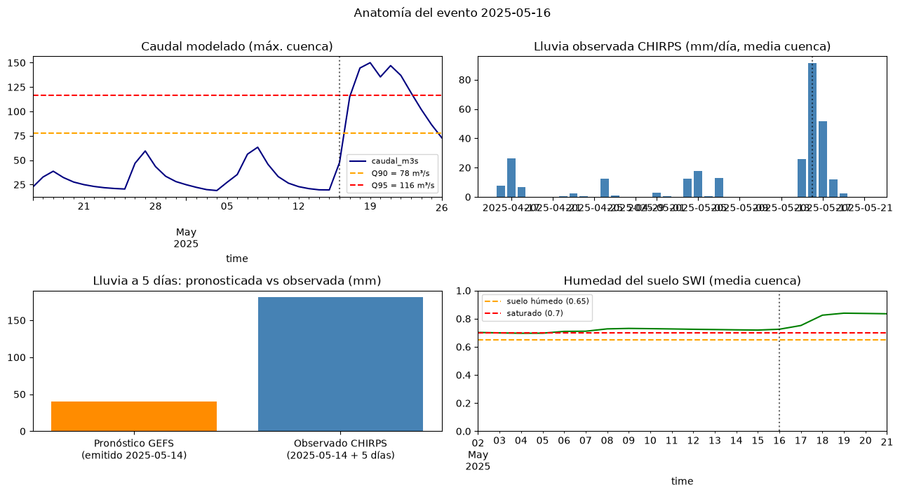
Desarrollamos AerEO, una librería modular de descubrimiento y extracción de datos satelitales: descarga, recorte en grillas y exportación de parches listos para entrenar modelos, desde Sentinel-2 hasta GOES-19.
El mismo flujo sirve para cualquier constelación y cualquier región: definís el área y la grilla, y AerEO resuelve búsqueda, descarga, reproyección y apilado temporal. El resultado son datasets multiconstelación consistentes — óptico, térmico, embeddings precomputados — listos para alimentar pipelines de machine learning sin trabajo manual de preparación.

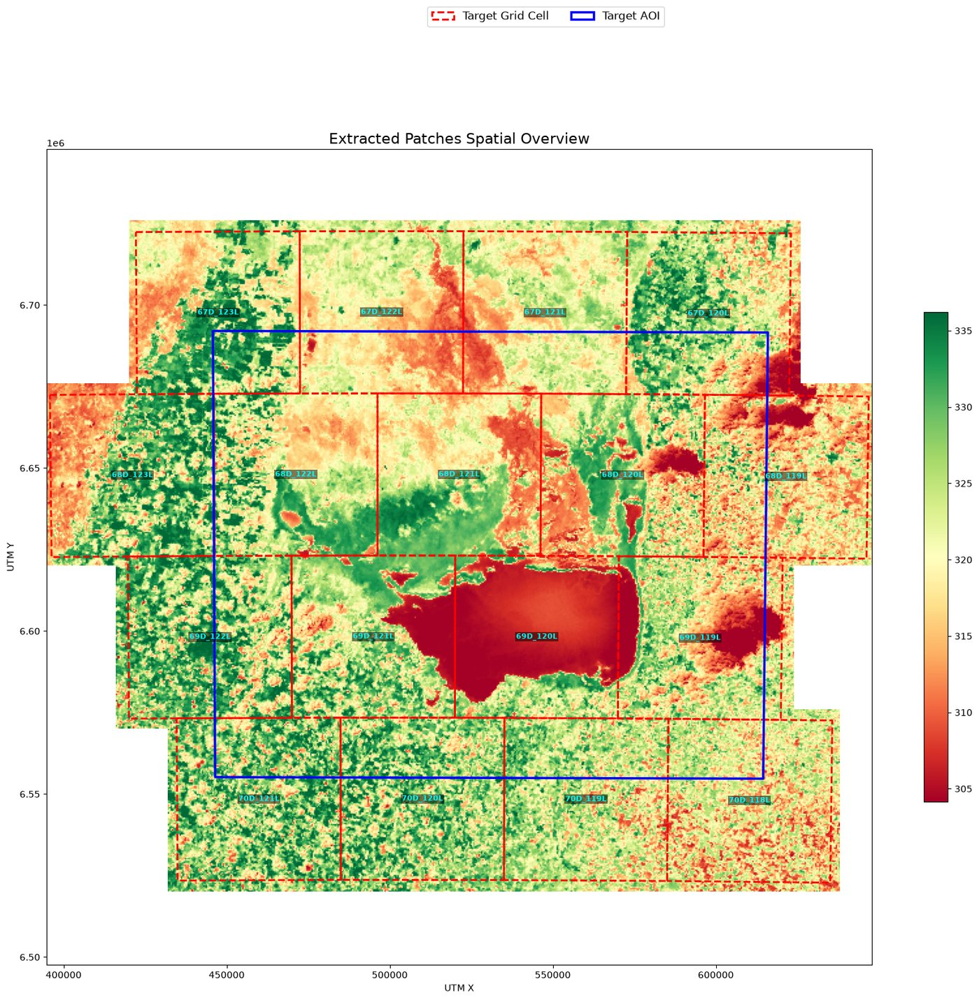
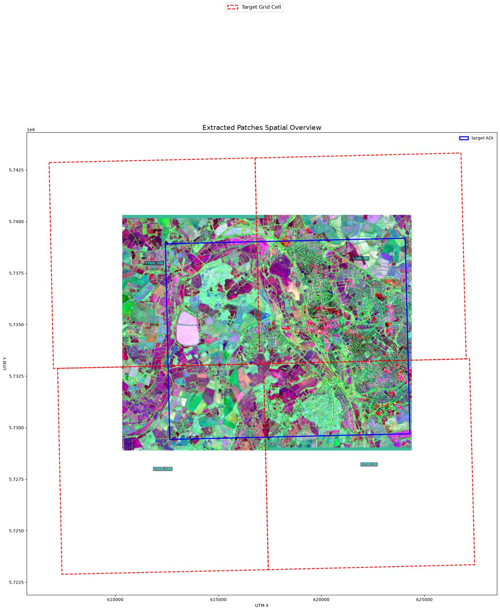
Una app que centraliza la comunicación de los equipos en territorio: brigadistas, guardaparques y cuadrillas reportan incidentes por WhatsApp — texto, audio o foto — sin instalar nada nuevo.
Cada mensaje se estructura automáticamente con IA: tipo de incidente, ubicación, prioridad y asignación. El reporte cae geolocalizado en un mapa operativo y en una planilla de seguimiento, en tiempo real, listo para coordinar la respuesta.
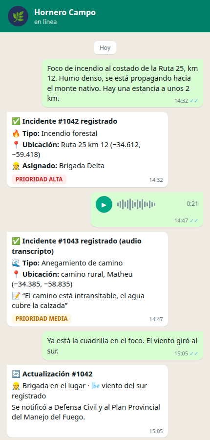
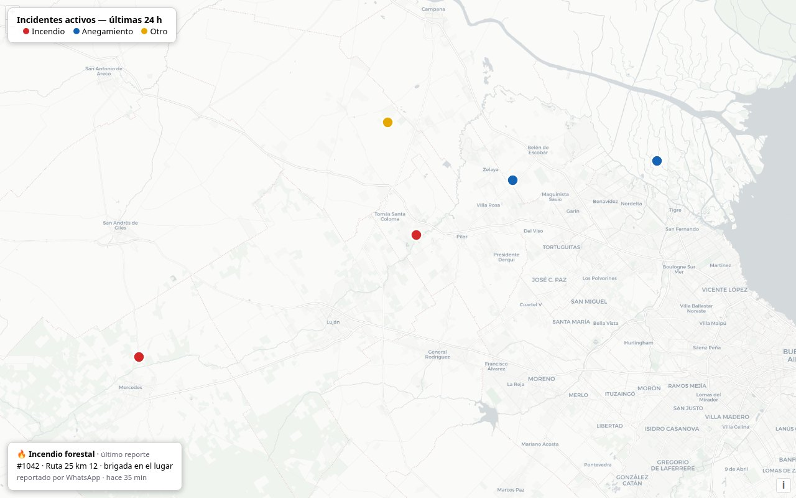
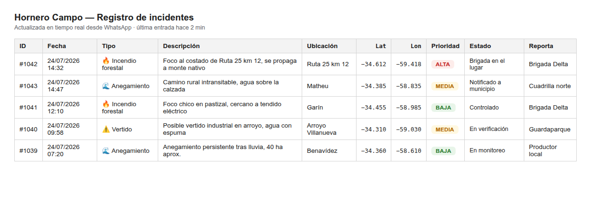
Para la tasación de una estancia en la provincia de Santa Fe analizamos su comportamiento hídrico con imágenes Landsat 8: seleccionamos los escenarios extremos de precipitación a partir del registro histórico y medimos el área anegada con el índice espectral NDWI.
El resultado: la superficie inundada del establecimiento oscila entre el 12% y el 43% del total, con una zona elevada de alto potencial agrícola-forestal libre de anegamiento. Un insumo objetivo y cuantificado para valorar el campo.

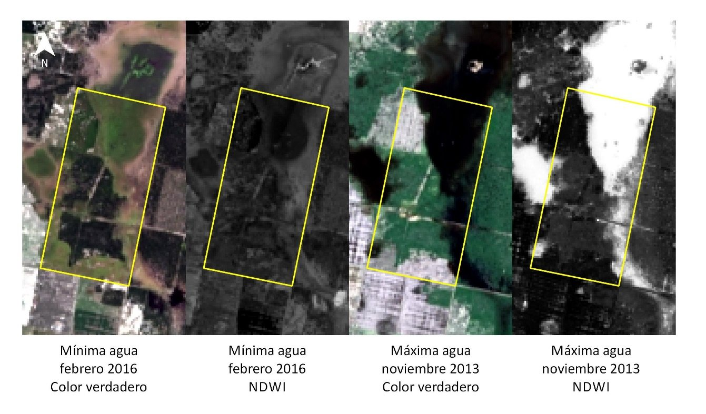
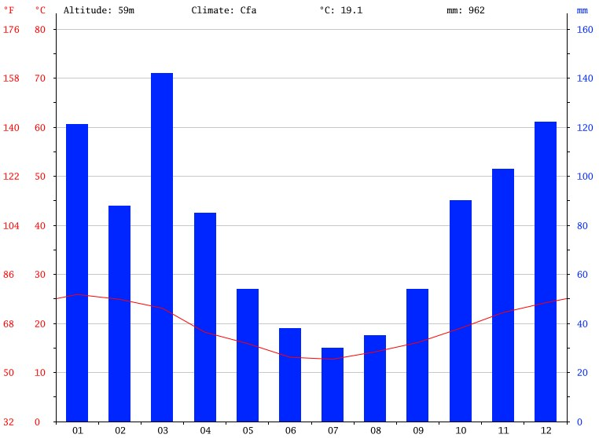
Investigación propia publicada en Remote Sensing (MDPI): 3DWDSRnet combina varias pasadas de 300 m del satélite PROBA-V de la ESA en una sola imagen de 100 m, usando una red convolucional 3D con bloques de activación ancha.
El modelo ganó el Kelvins PROBA-V Challenge de la ESA entrenado en una notebook común, con menos frames y menos memoria que los equipos competidores — IA de frontera sin infraestructura costosa.

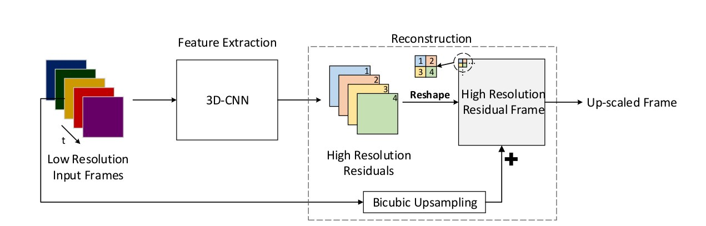
Quiénes somos
Combinamos investigación en inteligencia artificial, ciencias ambientales y gestión territorial para llevar la observación de la Tierra a decisiones concretas.
Machine Learning & IA
Investigador y líder en ciencia de datos con más de 10 años aplicando IA a problemas de alto impacto: observación de la Tierra, teledetección e imagen médica. Participó del Frontier Development Lab (programa junto a NASA y ESA), con publicaciones científicas y premios en competencias internacionales de IA (ESA Kelvins, Santander, Sadosky). Especialista en deep learning, visión por computadora, modelos multimodales e infraestructura cloud (AWS/GCP).
GIS & Ciencia de Datos Ambiental
Licenciado en Ciencias Ambientales y Magíster en Recursos Naturales (UBA), especializado en teledetección óptica y SAR, modelado ambiental y automatización de pipelines geoespaciales. Responsable técnico de productos satelitales para detección temprana de incendios, con experiencia en el Servicio Meteorológico Nacional y docencia universitaria en modelado estadístico.
Gestión Ambiental & Territorio
Licenciado en Ciencias Ambientales (UBA) con más de 20 años en restauración ecológica y adaptación al cambio climático en los ámbitos público, privado y de la sociedad civil. Intendente del Parque Nacional Ciervo de los Pantanos, director de restauración en ONG ambientales y coordinador de programas de gestión hídrica y ordenamiento territorial. Coordinó equipos interdisciplinarios de más de 30 personas y diseñó cientos de propuestas de conservación en Latinoamérica.
Contacto
¿Necesitás monitorear una cuenca, evaluar riesgo de inundación o desarrollar una solución de teledetección a medida? Escribinos y te respondemos a la brevedad.
Escribinos a info@hornerolabs.com